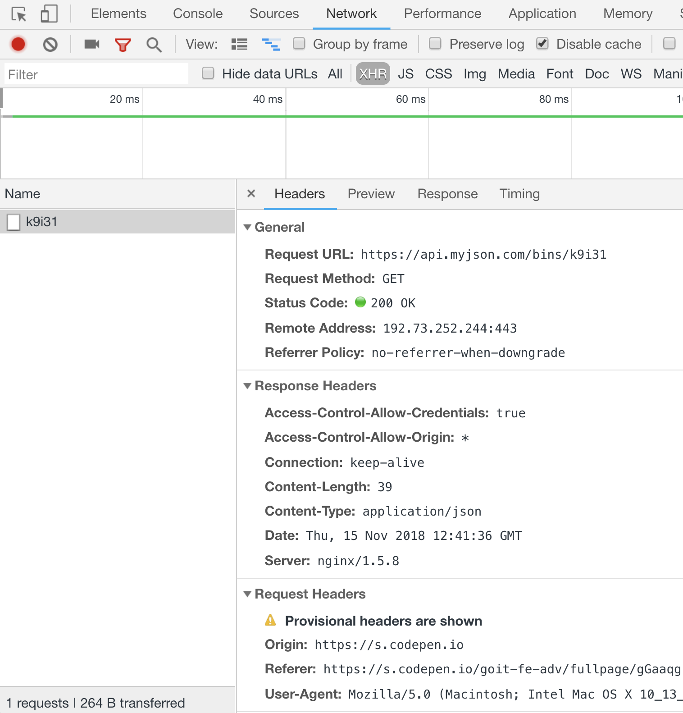

1. Asynchronous JavaScript and XML
AJAX — метод відправки або запиту даних, з подальшим відновленням інтерфейсу за цими даними, без необхідності перезавантаження сторінки. За рахунок цього зменшується час відгуку і веб-сторінка стає більш інтерактивною.
Незважаючи на те, що в назві технології присутній XML, використовувати його зовсім не обов'язково. Під AJAX мають на увазі будь-яке спілкування з сервером без перезавантаження сторінки.
У приклад можна привести підзавантаження даних:
- На веб-сторінці відбувається подія (сторінка завантажується, натискається кнопка "Показати більше", відправляється форма і т. п.).
- На клієнті, за допомогою JavaScript, реакцією на цю подію виконується функція для роботи з сервером де створюється і відправляється HTTP-запит.
- Сервер отримує і обробляє HTTP-запит, відправляючи назад у відповіді дані в JSON-форматі.
- На клієнті, за допомогою JavaScript, відповідь від сервера обробляється, зчитуються дані і оновлюється інтерфейс.
2. Fetch API
Fetch API — надає інтерфейс, набір методів і властивостей, для відправки, отримання та обробки ресурсів від сервера.
Це XMLHttpRequest нового покоління. Він надає покращений інтерфейс для складання запитів до сервера і побудований на обіцянках (promise).
fetch(url, options)
url— обов'язковий, шлях до даних, які ви хочете отримати.options— необов'язковий, об'єкт налаштувань запиту. Містить службову інформацію: метод (за замовчуваннямGET), заголовки, тіло і т. д.- Повертає проміс, який містить відповідь сервера.
fetch('https://jsonplaceholder.typicode.com/users')
.then(response => {
//response handling
})
.then(data => {
// data handling
})
.catch(error => {
// error handling
});
2.1. Response
В перший then передається екземпляр класу
Response,
забезпечений різними методами і властивостями. У ньому міститься службова
інформація про стан відповіді сервера.
Залежно від типу одержуваного контенту, використовується різний метод парса.
Response.prototype.json()- використовується, коли від бекенда очікуються дані в JSON-форматі.Response.prototype.text()- використовується, коли від бекенда очікуються дані в простому текстовому форматі, наприклад.csv- формат зберігання табличних даних у вигляді текстового файлу.Response.prototype.blob()- використовується, коли від бекенда очікуються дані, які описують файл, наприклад зображення, аудіо або відео.
fetch('https://jsonplaceholder.typicode.com/users')
.then(response => {
return response.json();
})
.then(data => {
// data handling
})
.catch(error => {
// error handling
});
2.2. Headers
Headers —
дозволяє виконувати різні дії в заголовках HTTP-запиту і відповіді. Ці дії
включають в себе витяг, налаштування, додавання і видалення заголовків (методи
append, has, get, set, delete).
const headers = new Headers({
'Content-Type': 'application/json',
'X-Custom-Header': 'custom value',
});
headers.append('Content-Type', 'text/bash');
headers.append('X-Custom-Header', 'custom value');
headers.has('Content-Type'); // true
headers.get('Content-Type'); // "text/bash"
headers.set('Content-Type', 'application/json');
headers.delete('X-Custom-Header');
Для складання заголовків запиту можна використовувати просто буквальний об'єкт із властивостями. В такому випадку методів заголовків не буде, що найчастіше і не потрібно.
const headers = {
'Content-Type': 'application/json',
'X-Custom-Header': 'custom value',
};
Запит з використанням заголовків може виглядати так.
fetch('https://jsonplaceholder.typicode.com/users', {
method: 'GET',
headers: {
Accept: 'application/json',
},
}).then(response => {});
2.3. Помилка при роботі з асинхронним кодом
Розберемо поширену помилку початківців-розробників, спробу використовувати дані
поза методу then, використовуємо для цього попередній приклад.
Посилання на приклад в Codepen.io
3. Вкладка Network
На вкладці Network відображаються всі запущені на сторінці HTTP-запити.
Вибравши XHR (можна фільтрувати за типом запиту) залишаться тільки запити до
бекенду, і після натискання кнопки, через деякий час, відобразиться запит.
Вибравши його, можна подивитися службову інформацію і тіло відповіді на вкладках
Headers, Preview, Response і Timing.
Посилання на приклад в Codepen.io

4. Робота з публічним RESTful API
Кожен API унікальний, їх тисячі, неможливо завчити код для роботи з одним сервісом і використовувати його для спілкування з іншим. З іншого боку, RESTful API побудовані за принципами REST-архітектури, а це значить що можна зрозуміти принцип і методи роботи, після чого, все що потрібно зробити - це ознайомитися з документацією того сервісу, який необхідно використовувати.
Для прикладу був обраний API ПриватБанку. З документації беремо URL для запиту інформації про поточний курс обміну валют.
https://api.privatbank.ua/p24api/pubinfo?exchange&json&coursid=11
Складається з:
https://api.privatbank.ua/p24api— endpoint, base URL, точка входу на API./pubinfo— ресурс до якого ми звертаємося?— говорить про те, що далі йдуть параметри запиту&— використовується для вказівки смисловогоІ, пов'язує параметри запиту
Параметри відповіді з документації:
ccy- код валютиbase_ccy- код національної валютиbuy- курс покупкиsale- курс продажу